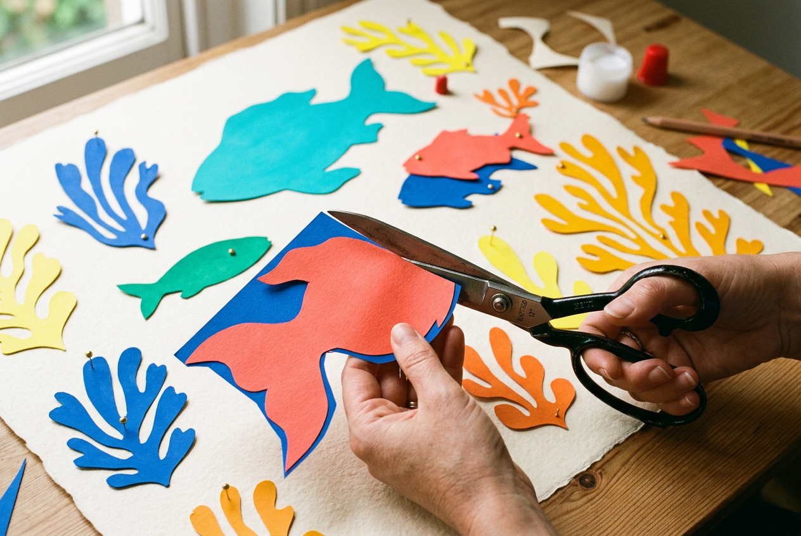

Разрежьте это немедленно!
Есть момент, знакомый почти каждому: рука тянется что-то сделать — и замирает. Внутри включается голос, который уже знает, как «правильно» и почему «не выйдет». Эта практика его обходит. Тут нельзя сделать плохо: вы режете цветную бумагу ножницами, без карандаша и без плана. И если сейчас мелькнуло «я не умею рисовать» — практика как раз для вас: резать и раскладывать умеют руки, диплом художника для этого не нужен.
Зачем это вам
Смысл не в бумаге. Ограничение — таймер и запрет на карандаш — снимает контроль быстрее любой инструкции «расслабьтесь». А контроль мы носим не только над ножницами. Тот же голос стоит между нами и первым словом в трудном разговоре, первым шагом в новом деле, решением, которое давно откладывается «до готовности».
Когда рука привыкает действовать раньше, чем включается критик, это остаётся с вами и за пределами стола. Появляется разрешение начать до того, как всё продумано, — и увидеть, что нужное часто рождается с первого движения, а не с десятого.
- Ножницы.
- Бумага с цветом: цветные листы, обёртка, журнальные развороты с плотной заливкой.
- Если есть — ваши старые рисунки, те, что не получились и лежат.
- Основа побольше. Таймер. Всего пятнадцать минут.
Разложите цвет перед собой. Не выбирайте долго — берите то, к чему потянулась рука. Дальше — пять кругов, и на каждом времени всё меньше.
- Первый круг, 5 минут. Режьте формы. Без карандаша, без наброска, без плана.
- Второй круг, 4 минуты. Новый цвет, ещё формы.
- Третий круг, 3 минуты. Рука разгоняется, думать почти некогда.
- Четвёртый круг, 2 минуты. Только цвет и движение.
- Пятый круг, 1 минута. Одна-две формы. Здесь работает только рука.
Когда круги закончились, отложите ножницы и таймер и соберите композицию. Выкладывайте вырезанные формы на большой лист и переставляйте их: меняйте местами, сдвигайте ближе и дальше, что-то убирайте, что-то добавляйте. Цель не «сделать красиво», а поймать момент, когда переставлять больше не хочется — всё как будто встало на место. На этом остановитесь.
Специальная бумага не нужна. Если цветных листов нет — в дело идут журналы и открытки, обёртки и упаковка, кусок ткани, любая бумага с цветом, что есть под рукой.
А если режете свои старые рисунки, те, что когда-то не получились, — это отдельная часть практики. Работа, которую вы считали неудачной, становится материалом для новой. Ничего не пропало, всё пошло в дело.
Как это развивает
- Спонтанность — способность начать без плана и без раскачки.
- Прямую работу с формой и цветом, без промежуточного «сначала правильно, потом красиво».
- Меньше контроля там, где он мешает, а не помогает.
- Разрешение на несовершенство — короткий путь мимо внутреннего критика.
Что будет, если делать неделю каждый день
Одна практика снимает контроль на пятнадцать минут. Неделя ежедневно — это уже привычка, а привычка меняет не технику, а ощущение.
К третьему-четвёртому дню рука перестаёт спрашивать разрешения: вы садитесь и сразу режете, без «сейчас соберусь». Критик всё ещё что-то говорит, но вы уже знаете, что его можно не слушать, — и это переносится за пределы стола, на дела, которые раньше буксовали на старте.
К концу недели накопится стопка работ, сделанных без единого «правильно». И, скорее всего, поменяетесь не вы как «художник» — поменяется то, как легко даётся первый шаг. Начинать окажется проще, чем казалось: не потому что пришёл идеальный момент, а потому что вы перестали его ждать.
Почему это работает
Ограничение по времени обходит внутреннего критика — он просто не успевает включиться. Отсутствие карандаша убирает этап «сначала правильно, потом красиво»: форма и цвет рождаются одним движением. И часто первое движение руки и есть верное — достаточное существует, и его видно сразу.
Как это открыл Матисс — в статье «Когда ограничение оказывается прорывом»#Матисс #вырезки #коллаж #спонтанность #арткоучинг #МыДолжныБытьВоображаемы
![[Vi]](assets/img/journal/emoji/znak_vi.png)